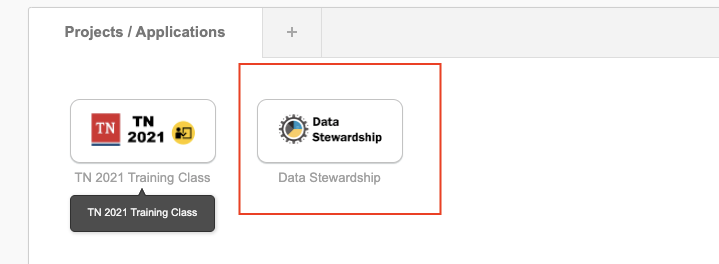
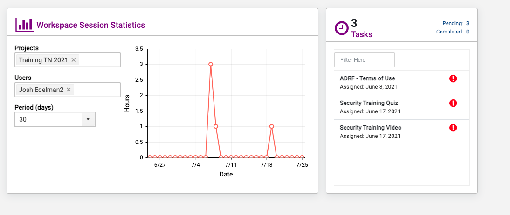

2 Onboarding Modules and Security Training
Data Stewardship App
Thee Data Stewardship web-based application is positioned primarily as the management and monitoring console for project and data stewards. It provides detailed insight on project configurations, user activity, user onboarding status, and overall cost of a project on the ADRF. We focus on four primary pillars of information a Project/Data Steward most often focuses on:
People – Who are the members of projects, how often do they use the ADRF, what exports have they requested and their status, estimated cost per person/project for current month and for the project since inception, and detailed usage metrics.
Projects – Details of project start/end dates, abstract description, number of members onboarded and pending, and resources the project has access to (i.e. datasets, etc).
Datasets – Description of the dataset, location on the ADRF (database or file system), size, name of the data steward(s), and the link to Enterprise Data Catalog (Informatica) describing the dataset and metadata.
Agreements – What agreements are related to these projects, indication of each member’s signing status, members pending signature, and term (dates) covered by the agreement(s).
As mentioned, the data stewardship application will track your ADRF usage. The app will also consolidate your ADRF Terms of Use, Security Training Quiz, and Security Training Video into one place. In order to complete ADRF onboarding, all three of the mentioned tasks are to be completed by the user (researcher). To access the Data Stewardship app, log in using your credentials at https://adrf.okta.com and click on the Data Stewardship icon. See picture below:

Once inside the Data Stewardship app, you have access to your personal workspace sessions statistics and the three tasks. See the example below:

ADRF - Terms of Use
The Terms of Use need to be completed before you are given access to the data and project sace inside the ADRF. To complete ADRF Terms of Use, open the Data Stewardship app and click on ADRF - Terms of Use. This will direct you to an Docusign site to complete the signing of the agreement.
Security Training Video
The Security Training Video needs to be completed as well. To complete the training, open the Data Stewardship app and click on Security Training Video. This will direct you to the video; click Mark Complete when you have completed this training.
Security Training Quiz
The Security Training Quiz needs to be completed after the Security Training Video. To complete the train- ing, open the Data Stewardship app and click on Security Training Quiz. This will direct you to the quiz, where you must answer five out of six questions correctly to pass.